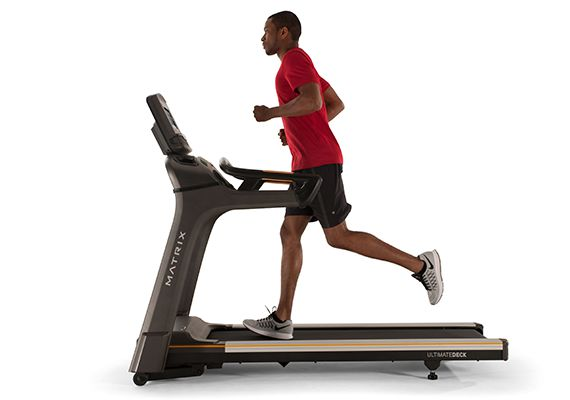
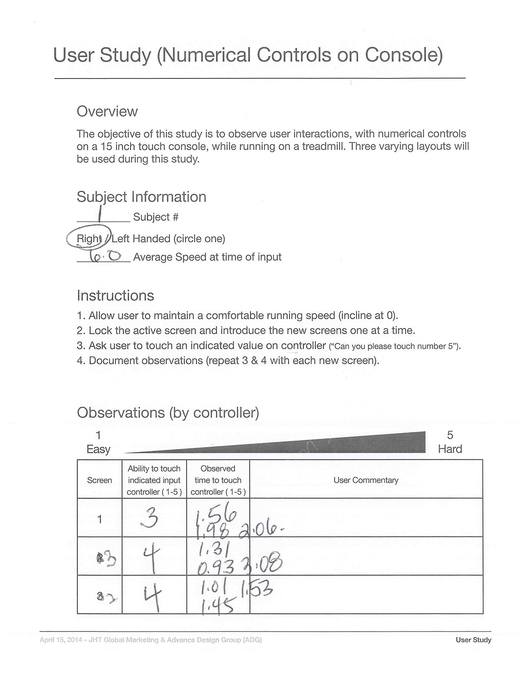
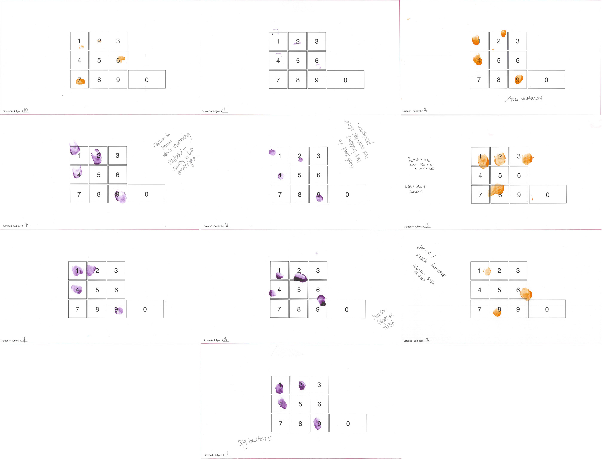
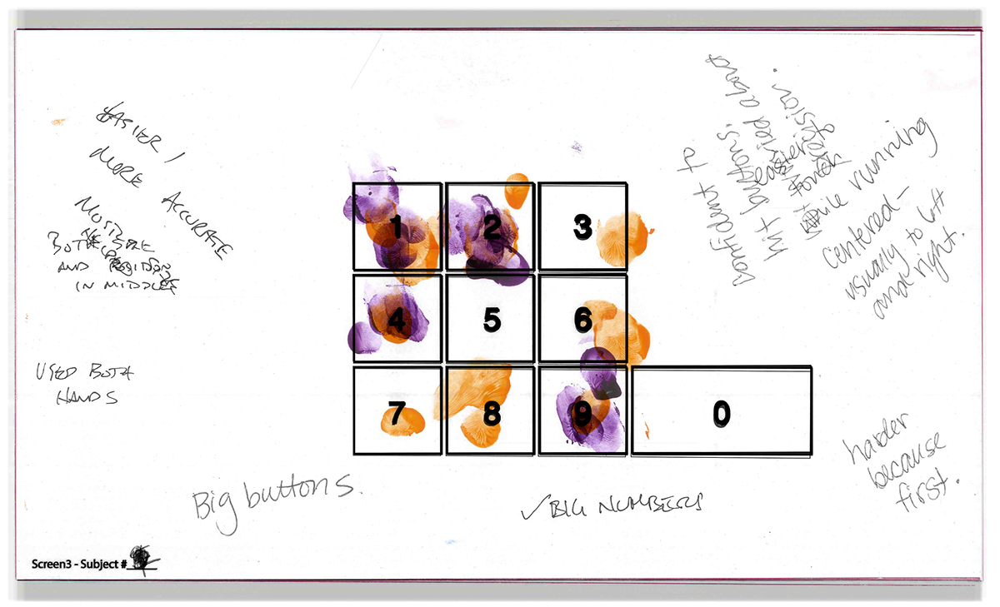
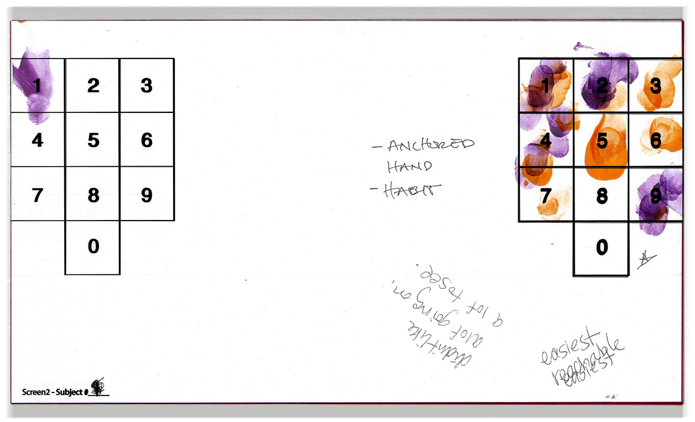
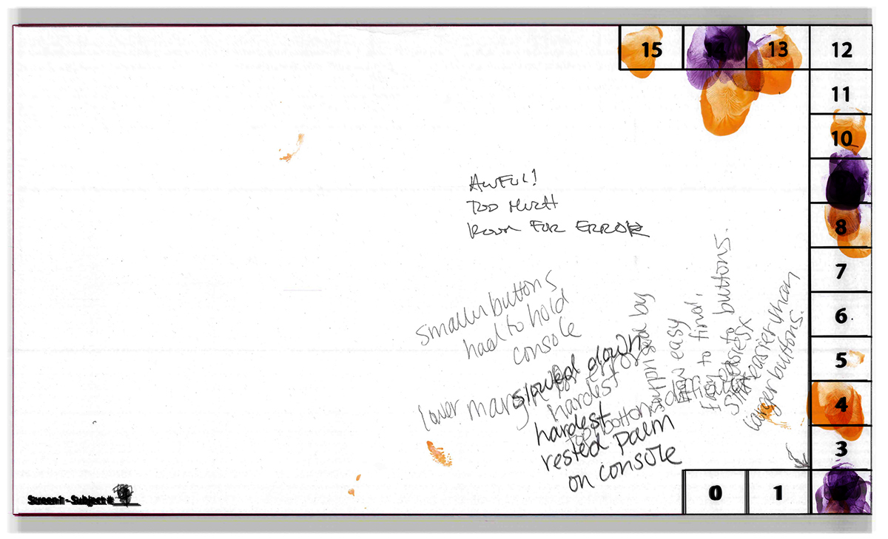

We were looking to improve the usabiliy of adjusting speed and incline when interacting with cardio equipment digital consoles. With a limited budget, we decided to go with paper prototypes to validate our theories. We taped our layouts over existing consoles and used fingerpaint to track where our testers were pressing. It's fun, easy way to learn how user's interacted with the layouts.
First, we created a script and ranking system for our researchers to run our test subjects through.
Next, we had the user get to a comfortable speed on the treadmill and presented each paper prototype to the console. The participants would use their finger "paint" their interaction.
We then analyzed each participants sheet and remarks.
  